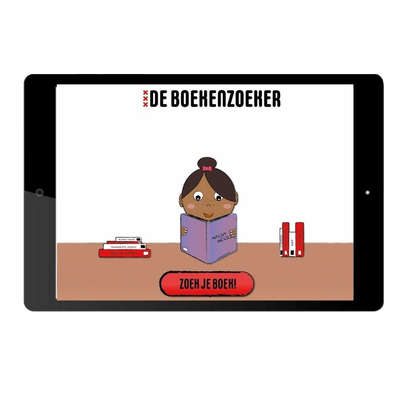

De boekenzoeker
Dit project heb ik individueel gemaakt. De opdracht voor dit project was om een boekenzoeker voor middelbare scholieren te maken op een Ipad interface. Deze opdracht werd gegeven door de gemeente van Amsterdam waardoor ik het aantrekkelijk moest maken voor de studenten maar ook voor de middelbare scholieren
Ik heb deze opdracht gemaakt met xd, waar ik ondertussen erg kundig mee ben geworden. Hieronder is mijn prototype te zien, probeer hem gerust uit!
prototype